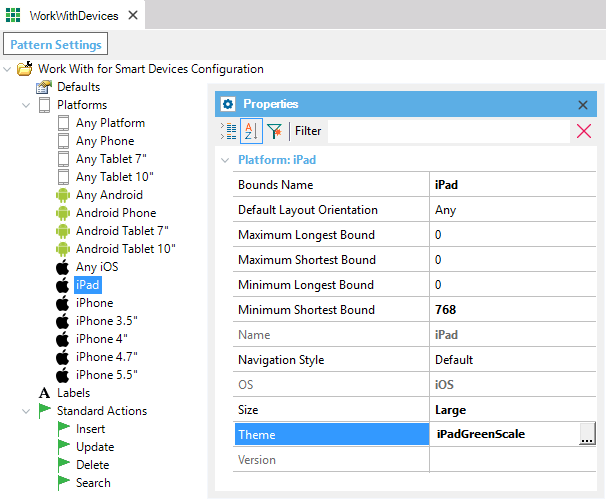

Theme for Smart Devices
Just like web applications feature an increasingly sophisticated look & feel, applications for Smart Devices can also require high-end interfaces. In GeneXus, this can be achieved by using themes for Smart Devices Conceptually, the use of themes for the Web and for Smart Devices (or Win) is the same. The difference between them lies in the low-level implementation involved in such different environments such as Windows and Web. HierarchiesSince in real life all platforms use the look & feel independently, greater impact could be achieved by using a theme specifically created for each one of them, or at least for the family. To begin with, each platform has a Theme property to add a design especially created for it. For example, it could be the design devised or created by the client who has requested the application, always taking into account the device features. Let’s suppose that some time later we create another theme for the iPad, called iPADinGreenScale. We go to the Theme property of the iPad platform and type this name.  From now on, the iOS generator will no longer use the theme included in the General Platform, and it will use this new theme instead. Note: Themes, like other property values, depend on each platform’s screen settings. For example, in the iPhone only the “Small” value can be applied to the Size property. For the iPad, it can't be used because it only takes the “Large” value. So, if we assign the “Small” value to the iPad, GeneXus will ignore it and try to find a valid value in any other platform with the "OS" property set to "iOS". If it can't find any, it will use the default theme. See AlsoTheme for Smart Devices object Videos
|

| Sub Categories |
| Category:Theme for Smart Devices object |